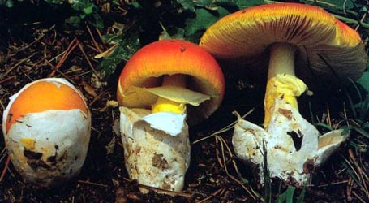

| name | Amanita neomurina |
| name status | nomen acceptum |
| author | Tulloss |
| english name | "Australian Mouse-Colored Death Cap" |
| images |
 1. Amanita murina, Queensland, Australia. |
| intro | The following description is based on the interpretation of the original description by Reid (1980). |
| cap | The cap of Amanita murina is campanulate to expanded, with an obtuse umbo, mouse-colored, and has a striate margin. |
| gills | The gills are free, crowded, white or slightly rose-tinted. |
| stem | The stem is thin, white, subfibrillose, with a skirt-like ring according to the original description (according to Reid's interpretation, the ring is barely free, easily comes away on the fingers, and is absent in dried material). The volva is membranous and limbate, white on the outside, and (Reid says) gray on inner surface. |
| odor/taste | Odor and taste for this species were not recorded. |
| spores | Combining Reid's measurements of spores of the lectotype, we get 7.0 - 9.0 (-10.0) × 6.2 - 8.0 µm and are globose to subglobose, rarely ellipsoid and amyloid. |
| discussion | The species was originally described from the state of Queensland on sandy soil (Reid 1980). Cleland and Cheel report the species from New South Wales. All material cited by Wood (1997) was from New South Wales and occurred in sclerophyll forest.—R. E. Tulloss |
| brief editors | RET |
| name | Amanita neomurina | ||||||||
| author | Tulloss in Tulloss et al. 2015. Amanitaceae 1(2): 3. | ||||||||
| name status | nomen acceptum | ||||||||
| english name | "Australian Mouse-Colored Death Cap" | ||||||||
| synonyms |
≡Amanita murina Sacc. nom. illeg. 1891a. Syll. Fung. 9: 2. [Posterior homonym. ICBN §53.1]
≡Agaricus murinus Cooke & Massee nom. illeg. 1889. Grevillea 18 (fasc. 85): 1. [Posterior homonym. ICBN §53.1] non Agaricus murinus Batsch. 1783. Elench. Fung 1: col. 79, no. 104. ≡Agaricus murinus Batsch : Fr. 1821. Syst. Mycol. 1: 115. ≡Tephrocybe murina (Batsch) M. M. Moser. 1967. Kl. Kryptogam. Fl., ed. 3: 116. The editors of this site owe a great debt to Dr. Cornelis Bas whose famous cigar box files of Amanita nomenclatural information gathered over three or more decades were made available to RET for computerization and make up the lion's share of the nomenclatural information presented on this site. | ||||||||
| etymology | murinus, "mouse-gray" | ||||||||
| MycoBank nos. | 516660, 160829, 282554 | ||||||||
| GenBank nos. |
Due to delays in data processing at GenBank, some accession numbers may lead to unreleased (pending) pages.
These pages will eventually be made live, so try again later.
| ||||||||
| lectotypes | K M-190640 | ||||||||
| lectotypifications | Reid. 1980. Austral. J. Bot., Suppl. Ser. 8: 40. | ||||||||
| revisions |
Pegler. 1965. Austral. J. Bot. 13: 340, fig. 1/5. Reid. 1980. Austral. J. Bot., Suppl. Ser. 8: 40, figs. 25(a-g), 76-77, 97. | ||||||||
| selected illustrations | Cooke. 1890. Grevillea 18 (fasc. 88, after p. 360): pl. 1. | ||||||||
| intro |
The following text may make multiple use of each data field. The field may contain magenta text presenting data from a type study and/or revision of other original material cited in the protolog of the present taxon. Macroscopic descriptions in magenta are a combination of data from the protolog and additional observations made on the exiccata during revision of the cited original material. The same field may also contain black text, which is data from a revision of the present taxon (including non-type material and/or material not cited in the protolog). Paragraphs of black text will be labeled if further subdivision of this text is appropriate. Olive text indicates a specimen that has not been thoroughly examined (for example, for microscopic details) and marks other places in the text where data is missing or uncertain. The material on this tab is derived from (Cooke 1889) and the revision of Reid (1980). Analysis of these sources is provided by the page editor(s). Original Latin diagnosis (Cooke 1889): | ||||||||
| pileus | from protolog: 38 - 51 mm wide, mouse-gray (light brownish gray), broadly campanulate, with obtuse umbo, polished, subglabrous; context not described; margin striatulate; universal veil not mentioned, not depicted. | ||||||||
| lamellae | from protolog: free, subcrowded, white or slightly tinged with pink; lamellulae not described. | ||||||||
| stipe | from protolog: 76 × 6.5 mm, whitish, fibrillose below; bulb small and subglobose [per fig. based on field drawings per (Reid 1980)]; context not described; partial veil pendent,small, white, superior [per fig. based on field drawings per (Reid 1980)]; universal veil limbate, whitish, membranous, irregular, enclosing stipe base [per fig. based on field drawings per (Reid 1980)]. | ||||||||
| odor/taste | not recorded. | ||||||||
| macrochemical tests |
none recorded. | ||||||||
| basidia | from Reid (1980): 31 - 33 × 9.3 - 11.3 μm, at least some 4-sterigmate. [Note: Reid doesn't describe the basidia from the lectotype in the text, but provides a scale drawing (Reid 1980: fig. 25b) including two apparently mature basidia from which the above measurements are derived.—ed.] | ||||||||
| basidiospores | from Reid (1980): Reid provides three sets of dimensions. From the spore print, he gives two sets 7.0 - 8.8 × 6.8 - 8.0 μm and 7.5 - 9.0 × 6.2 - 7.2 μm. From the gills he reports spores up to 10.0 × 7.5 μm. From this data we could project the following: [-/-/-] 7.0 - 10.0 × 6.2 - 8.0 μm, (Q = 1.03 - 1.33). Continuing with Reid's observations on the type: hyaline, thin-walled, amyloid, globose[?] to subglbose to broadly ellipsoid to ellipsoid; apiculus "oblique"; contents not recorded; color in deposit not recorded. | ||||||||
| ecology | from protolog: In sandy soil. | ||||||||
| material examined |
from protolog: AUSTRALIA: QUEENSLAND—Brisbane - unkn. loc., | ||||||||
| discussion |
In selecting the a lectotype, Reid (1980) picked the collection accompanied by a spore print. He reports that both collections were accompanied by pencil sketches of the basidiomes in fresh condition. Reid (1980) assigns two collections to this speice. Neither is a precise match to the protolog. For example, neither has a striate cap margin; and one is pale yellowish gray-brown while the other is dark gray-brown with blackish brown over the disc. For the moment, Reid's descriptions of the two collections will be present here; and, as usual for the site, they are edited so as to conform to the common layout of descriptions on this site. (1) Corresponding to (Reid 1980: fig. 97) (2) Basidiome not illustrated, described as exsiccatum. | ||||||||
| citations | —R. E. Tulloss | ||||||||
| editors | RET | ||||||||
Information to support the viewer in reading the content of "technical" tabs can be found here.
| name | Amanita neomurina |
| name status | nomen acceptum |
| author | Tulloss |
| english name | "Australian Mouse-Colored Death Cap" |
| images |
1. Amanita murina, Queensland, Australia. |
| drawing | (1) From Cooke (1890) plate 1, from the very end of Grevillea 18 (fasc. 88). With annotation "Figured from the specimens sent with notes." That is to say, this is not an accurate drawing from life and probably should not be used as the basis for any anatomical conclusions. A later republication of this illustration shows the stipe concolorous with the universal veil at the stipe base and shows the saccate volva grayish buff in cross-section. |
Each spore data set is intended to comprise a set of measurements from a single specimen made by a single observer; and explanations prepared for this site talk about specimen-observer pairs associated with each data set. Combining more data into a single data set is non-optimal because it obscures observer differences (which may be valuable for instructional purposes, for example) and may obscure instances in which a single collection inadvertently contains a mixture of taxa.


Text and User-Generated Sporographs are published under the Creative Commons License.

In the case of a taxon page, image credits are on the 'image' tab.